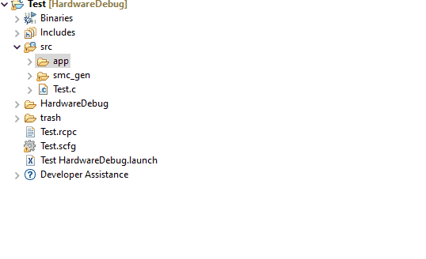
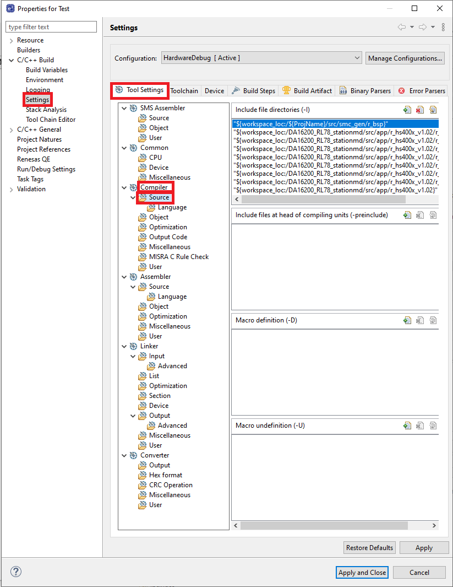
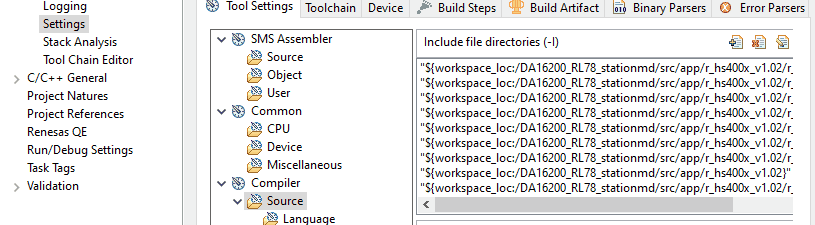
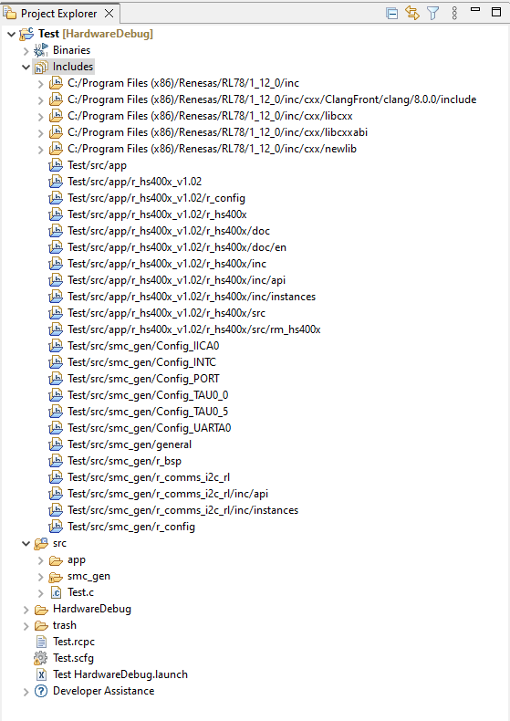
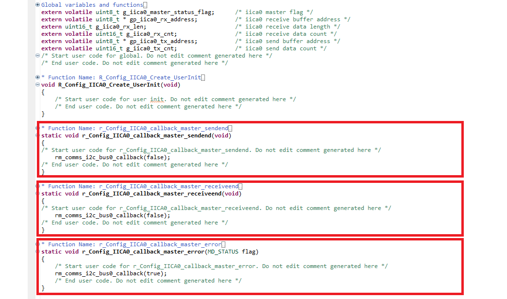
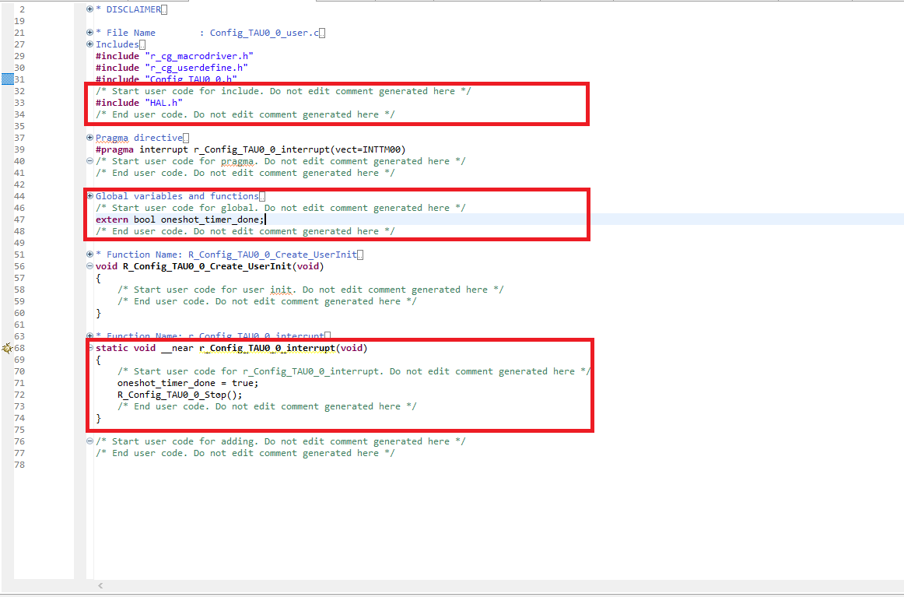

Here we will guide you through both inclusion and understanding of the code for this project. The aim is to give an understanding of how to use smart configurator generated code, the e² studio build settings & finally what the lab code does.
3.1 Pull In The Free Code
First we have to pull in the free code provided for this lab that is the hs4001 sensor library & WiFi connection
. We call this free code as it serves a fixed purpose and is only here to facilitate the
training.
To acquire the free code please click here to download & extract
the contents of the .zip archive.
Please copy the folder "app" into the "src" folder in your e² studio project.
Once you have copied the app folder, it's now time to include the folder to the project. Follow the following steps to do so:
- Locate the include directory in the project and left click on it to see an C/C++ Project Settings or use Ctrl+Alt+P. 
- Select Settings->Tool Settings->Compiler->Source. 
- click on add icon and Select workspace that will take you to the folders of the current workspace now select project folder->src->app folder which we want to include. Finally check on Add subdirectories and press ok. 
- Hit Apply and you should see the files added in the includes folder as follows 
3.2 Edit the IICA0 Driver
The I2C base driver doesn't provide the appropriate functionality out of the box - so let's edit it and
give ourselves the functions we need, this is namely an I2C send function which triggers when there's a error or event completion flag.
Navigate to [src] → [smc_gen] → [Config_IICA0] → Config_IICA0_user.c
You can edit the file in section starting with the "Start user code for function..." comment gaurd - place the following
function declarations.
Function: r_Config_IICA0_callback_master_sendend
rm_comms_i2c_bus0_callback(false);
Function: r_Config_IICA0_callback_master_receiveend
rm_comms_i2c_bus0_callback(false);
Function: r_Config_IICA0_callback_master_error
rm_comms_i2c_bus0_callback(true);
Which should look like this:
3.2 Edit the UARTA0 Driver
Now, let's edit the UART base driver with the appropriate functionality to achieve desired function requirementsed, this is namely an UART sendend and receive end function which triggers when there's a send and receive completion flag respectively.
Navigate to [src] → [smc_gen] → [Config_UARTA0] → Config_UARTA0_user.c
You can edit the file in section starting with the "Start user code for function..." comment gaurd - place the following
function declarations.
Function: r_Config_UARTA0_callback_sendend
Hal_uart_tx_done_callback();
Function: r_Config_UARTA0_callback_receiveend
Hal_uart_rx_done_callback();
Which should look like this:

3.3 Populate TAU00 ISR
The clockwise timer counter needs it's ISR populating - this ISR fires everytime timer runs out to make sure the UART connection with DA16200 functions timely. We fill this ISR with some code so the
application can be made aware of a clockwise rotation.
Now first we need to include our "main.h" file from earlier to enable the ISR to communicate with the
application.
Navigate to the [src] → [smc_gen] → [Config_TAU0_0] → Config_TAU0_0_user.c &
copy the code below into the includes section of the file, inside the "Start user code for include..."
comment gaurd.
#include "HAL.h"Then add the following the global variable declaration section
extern bool oneshot_timer_done;
Finally inside the r_Config_TAU0_0_interrupt isr, please place the following code. This code signals to the application that the timer ran out. It also clears the interrupt flags both timers as a debounce precaution. It should be placed within the "Start user code for r_Config_TAU0_0_interrupt..." comment gaurd.
oneshot_timer_done = true;
R_Config_TAU0_0_Stop();
The changes should look like this when finished:
3.4 Populate TAU05 ISR
The sensor counter needs it's ISR populating - this ISR fires every milisecond to make sure the sensor reading is initiated after the sensor measurement is completed. We fill this ISR with some code so the
application functions properly.
Now first we need to include our function in the header file.
Navigate to the [src] → [smc_gen] → [Config_TAU0_5] → Config_TAU0_5.h &
copy the code below at the end of the file, inside the "Start user code for function..."
comment gaurd.
void R_Config_TAU0_5_Blocking_Wait(void);Next navigate to the corresponding Config_TAU0_4_user.c file ([src] → [smc_gen] → [Config_TAU0_5] → Config_TAU0_5_user.c) and please add the following code at the bottom of the file, again within the comment gaurd "Start user code for adding...".
void R_Config_TAU0_5_Blocking_Wait(void)
{
TMIF05 = 0U; /* clear INTTM05 interrupt flag */
TMMK05 = 1U; /* disable INTTM05 interrupt */
TS0 |= _0020_TAU_CH5_START_TRG_ON;
while(0U == TMIF05)
{
NOP(); /* TODO: HALT*/
}
Sensor_read();
TT0 |= _0020_TAU_CH5_STOP_TRG_ON;
TMIF05 = 0U; /* clear INTTM05 interrupt flag */
}The changes should look like this when finished:

3.5 Pull In The Main Code
Now lets copy in the main code - this is running the application.
Simply replace the entire contents of your main source file src/<project_name>.c
with the code below.
#include "r_smc_entry.h"
#include "da16200_AT.h"
#include "http_server.h"
#include "sensor.h"
#include <string.h>
static uint8_t http_ip_port[500];
void main(void)
{
http_receive_status http_status;
EI();
wifi_init();
wifi_set();
Sensor_read();
while(1)
{
Sensor_read();
memset(http_ip_port, 0, 500);
http_status = HTTP_ERROR;
/* Wi-Fi server data receive */
http_status = http_server_receive(http_ip_port);
switch(http_status)
{
/* HTTP GET command received */
case HTTP_GET:
http_update(http_ip_port);
break;
/* LED BLINK command received */
case HTTP_LED_BLINK:
CCS0 ^= 0x01U;
break;
/* HTTP OTHER command received */
case HTTP_OTHERS:
http_update(http_ip_port);
break;
default:
break;
}
}
}3.6 Application Explained [Informative]
As the section name implies this in informative, there are no actions in this step and it can be freely
skipped. But this section aims to explain the application code and provide a clear understanding of why
& how certain things have been done. We will do this by combing through the code, picking out
lines of code or groups of lines of code in order to dissect what is happening.
The application codes in the folder looks like

The folder has a following files and what it signifies
- da16200_AT - All of the code involving AT commands to communicate with DA16200 to initiate Wifi or connect to a wifi connection.
- http_server - This code has all the function involving the hosting of http server and the design of the html webpage that will be hosted. This the webpage where the sensor updates will be visible.
- Sensor - These files entail the functions which initiates sensors and read the sensor values.
- Refresh of the webpage at a schedules interval to make sure the sensor value is updated.
- A user induced webpage get request i.e. user refreshes the webpage.
- User clickes LED toggle button on the webpage to turn on/off LED.
The main function which includes the main loop is explained below.
The first part of the program is wifi initialization (wifi_init Function) which requires a sequence of AT
commands. AT commands are the medium of interraction for DA16200, and to initiate this AT command communication
we give a ATZ. Once AT commands are initiated, the user might wish to see what command was send before
the response is received to avoid confusion. This can be achieved using Echo mode. Echo mode would reflect/Echo
back the command that was sent by the user making sure the sequence shown is Command-Response-Command-Response....
The wifi_init function and th AT commands used can be seen in the da16200_AT.c file as follows. To get to the function, you can ctrl+click on the
wifi_init function in the project main file.
The list of the AT commands used and the expected responses can be found in the start of the da16200_AT.c. The main AT command of interest is WFSAP, a command used to setup Soft AP interface. A soft-AP needs following arguments to set up.
- AP SSID: Name of the Wi-Fi
-
Security Protocol:
- 0 - open
- 2 - WPA
- 3 - WPA2
- 4 - WPA+WPA2
- 5 - WPA3 OWE
- 6 - WPA3 SAE
- 7 - WPA2 RSN & WPA3 SAE
-
Encryption:
- 0 - TKIP
- 1 - AES
- 2 - TKIP+AES
- Passphrase: Password for your Wi-Fi
- Country code
The Soft-AP initialize and setup chain looks as follows

Now moving to the sensor part of the project. This is the explaination of the code file sensor.c and the
sensor_read function which is used to get the sensor reading. The code is divided into two sections, the
first section is where the sensor is triggered to start measurements. The second section is initiated
after the successfull completion of the first section. This part reads the acquired measurement in a raw
format and then calculates a temperature and humdity value out of the raw sensor data.
The code for executing this and it's stages are explained below.
The final piece of the project is the webpage that is showing the sensor value graphically. This involves http_update
function from the code file http_server.c. The layout of the html page is described in the start of the code. The
http_update function gets the last read sensor value which then decides the colour of the graph depiciting the value.
Once all of the data is gathered in one string it is then attached to the html page. This update html page is then
uploaded for the user to view.
Note: the webpage will auto refresh every 10 seconds.
The code for http update is as follows